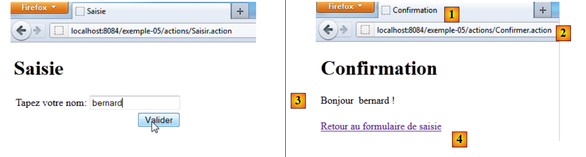
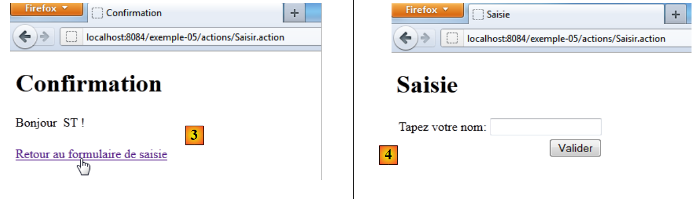

6. Ejemplo 05 – El formulario de entrada
Presentamos el concepto de formulario de entrada mediante un ejemplo sencillo.
6.1. El proyecto de NetBeans
 |
En [1], el proyecto:
- las vistas [Saisie.JSP], [Confirmation.JSP]
- el archivo de configuración [struts.xml]
- el archivo de mensajes [messages.properties]
- la acción [Confirmer.java]
En [2], la página de entrada
6.2. Configuration
El archivo [struts.xml] es el siguiente:
<?xml version="1.0" encoding="UTF-8" ?>
<!DOCTYPE struts PUBLIC
"-//Apache Software Foundation//DTD Struts Configuration 2.0//EN"
"http://struts.apache.org/dtds/struts-2.0.dtd">
<struts>
<!-- internacionalización -->
<constant name="struts.custom.i18n.resources" value="messages" />
<!-- paquete predeterminado -->
<package name="default" namespace="/" extends="struts-default">
<default-action-ref name="index" />
<action name="index">
<result type="redirectAction">
<param name="actionName">Saisir</param>
<param name="namespace">/actions</param>
</result>
</action>
</package>
<!-- paquete de acciones -->
<package name="actions" namespace="/actions" extends="struts-default">
<action name="Saisir">
<result name="success">/vues/Saisie.JSP</result>
</action>
<action name="Confirmer" class="actions.Confirmer">
<result name="success">/vues/Confirmation.JSP</result>
</action>
</package>
</struts>
- línea 20: el paquete de acciones de URL /actions/Action.
- líneas 21-23: definen la acción [Saisir]. No tiene ninguna clase asociada. La respuesta es siempre la vista [/vues/Saisie.JSP]
- líneas 24-26: definen la acción [Confirmer]. Se le asocia la clase [actions.Confirmer]. La respuesta es siempre la vista [/vues/Confirmation.JSP]
6.3. La acción [Confirmer]
Su código es el siguiente:
package actions;
import com.opensymphony.xwork2.ActionSupport;
public class Confirmer extends ActionSupport{
// plantilla
private String nom;
// getters y setters
public String getNom() {
return nom;
}
public void setNom(String nom) {
this.nom = nom;
}
}
La clase solo tiene un campo, el de la línea 8 con sus métodos get y set.
6.4. El archivo de mensajes
El contenido de [messages.properties] es el siguiente:
saisie.texte=Formulaire de saisie
saisie.titre1=Saisie
saisie.titre2=Saisie
saisie.libelle=Tapez votre nom
saisie.valider=Valider
confirm.titre1=Confirmation
confirm.titre2=Confirmation
confirm.texte=Bonjour
confirm.retour=Retour au formulaire de saisie
Estas claves de mensajes se utilizan en las dos vistas [Saisie.JSP] y [Confirmation.JSP].
6.5. Las vistas
6.5.1. La vista [Saisie.JSP]
Visualmente se ve así:
 |
Su código fuente es el siguiente:
<%@page contentType="text/html" pageEncoding="UTF-8"%>
<%@ taglib prefix="s" uri="/struts-tags" %>
<!DOCTYPE html>
<html>
<head>
<meta http-equiv="Content-Type" content="text/html; charset=UTF-8">
<title><s:text name="saisie.titre1"/></title>
</head>
<body>
<h1><s:text name="saisie.titre2"/></h1>
<s:form action="Confirmer">
<s:textfield key="saisie.libelle" name="nom"/>
<s:submit key="saisie.valider" action="Confirmer"/>
</s:form>
</body>
</html>
- línea 7: muestra el mensaje de clave saisie.titre1 (Entrada) [1].
- línea 10: muestra el mensaje de clave saisie.titre2 (Entrada) [2].
- líneas 11, 14: la etiqueta <s:form> introduce un formulario HTML. Todas las entradas dentro de este formulario se enviarán al servidor web. Se dice que son postées, ya que la operación HTTP que interviene en este envío de datos al servidor se llama POST. Los datos se envían en forma de cadena de caracteres param1=valeur1¶m2=valeur2&... Ya nos hemos encontrado con esta cadena en el párrafo 3.5 del ejemplo 02. En ambos casos, Struts 2 procesa la cadena de parámetros de la misma manera. Los valores valeuri de los parámetros parami se inyectan en la acción ejecutada, en campos que llevan los mismos nombres que los parámetros parami. ¿A quién se envían los datos enviados? Por defecto, a la acción que mostró el formulario, en este caso la acción Saisir [5]. También se puede utilizar el atributo action para especificar otra acción, en este caso la acción [Confirmer].
- línea 12: la etiqueta <s:textfield ...> muestra el campo de entrada [3]. Su atributo key indica la clave del texto que se mostrará a la izquierda del campo de entrada. Por lo tanto, la etiqueta se busca en el archivo [messages.properties]. El atributo name es el nombre del parámetro que se enviará. El valor asociado a este parámetro será el texto ingresado en el campo de entrada.
- línea 13: la etiqueta <s:submit ...> muestra el botón [4]. Su atributo key indica la clave del texto que se mostrará en el botón. Por lo tanto, el texto se busca en el archivo [messages.properties]. Un botón de tipo submit provoca el envío del formulario POST hacia una acción. Ya mencionamos anteriormente que esta acción era [Confirmer] debido al atributo action de la etiqueta <s:form>. El atributo action de la etiqueta <s:submit> permite especificar, si es necesario, otra acción. Aquí hemos vuelto a establecer la acción [Confirmer]. El botón tiene un nombre de parámetro por defecto: action:nom_action; en este caso, action:Confirmer. El valor asociado a este parámetro es el texto del botón. Al final, la cadena de parámetros enviada a la acción [Confirmer] cuando el usuario haga clic en el botón [Valider] será:
?nom=xx&action:Confirmer=Valider.
donde xx es el texto ingresado por el usuario en el campo de entrada.
6.5.2. La vista [Confirmation.JSP]
Se ve así:
 |
Ingresamos un nombre y validamos la página de entrada. A continuación, obtenemos la respuesta [1], que corresponde a la vista [Confirmation.JSP]. El valor URL que se muestra en [2] corresponde a la acción [Confirmer]. En el ejemplo anterior, se envió la siguiente cadena de caracteres:
El parámetro action:Confirmer permite a Struts 2 dirigir la solicitud a la acción correcta, en este caso la acción [Confirmer]. El valor del parámetro nom se inyectará entonces en el campo nom de la acción [Confirmer].
El código fuente de la acción [Confirmation.JSP] es el siguiente:
<%@page contentType="text/html" pageEncoding="UTF-8"%>
<%@ taglib prefix="s" uri="/struts-tags" %>
<!DOCTYPE html>
<html>
<head>
<meta http-equiv="Content-Type" content="text/html; charset=UTF-8">
<title><s:text name="confirm.titre1"/></title>
</head>
<body>
<h1><s:text name="confirm.titre2"/></h1>
<s:text name="confirm.texte"/>
<s:property value="nom"/> !
<br/><br/>
<a href="<s:url action="Saisir"/>"><s:text name="confirm.retour"/></a>
</body>
</html>
- línea 7: muestra el nombre de la clave confirm.titre1 que se encuentra en el archivo de mensajes [1]
- línea 10: muestra el nombre de la clave confirm.titre2 que se encuentra en el archivo de mensajes [3]
- línea 12: muestra la propiedad nom de la acción [Confirmer] que se ejecutó.
- línea 14: crea un enlace a la acción [Saisir]. La etiqueta <s:url>,, que ya se ha encontrado, se generará a partir de URL y [2] del navegador. La ruta será la de [2] http://localhost:8084/exemple-05/actions y la acción será la del atributo action, en este caso Saisir. Por lo tanto, el URL del enlace será http://localhost:8084/exemple-05/actions/Saisir.action. El texto del enlace será la etiqueta asociada a la clave confirm.retour [4].
6.6. Las pruebas
Aquí hay dos consultas:
 |
En [1], se ingresa un nombre y se valida. En [2], la página de confirmación.
 |
En [3], seguimos el enlace de regreso al formulario. En [4], el resultado. Todo ha quedado explicado, excepto el paso de [3] a [4]. ¿Por qué no aparece en [4] el nombre que habíamos ingresado?
El enlace en [3] es un enlace hacia URL y [http://localhost:8084/exemple-05/actions/Saisir.action]. Por lo tanto, se ejecuta la acción [Saisir]. Veamos su configuración en [struts.xml]:
<package name="actions" namespace="/actions" extends="struts-default">
<action name="Saisir">
<result name="success">/vues/Saisie.JSP</result>
</action>
<action name="Confirmer" class="actions.Confirmer">
<result name="success">/vues/Confirmation.JSP</result>
</action>
</package>
La acción [Saisir] no está asociada a ninguna acción. Por lo tanto, se muestra inmediatamente la vista [Saisie.JSP]. Veamos el código de esta vista:
<%@page contentType="text/html" pageEncoding="UTF-8"%>
<%@ taglib prefix="s" uri="/struts-tags" %>
<!DOCTYPE html>
<html>
<head>
<meta http-equiv="Content-Type" content="text/html; charset=UTF-8">
<title><s:text name="saisie.titre1"/></title>
</head>
<body>
<h1><s:text name="saisie.titre2"/></h1>
<s:form>
<s:textfield key="saisie.libelle" name="nom"/>
<s:submit key="saisie.valider" action="Confirmer"/>
</s:form>
</body>
</html>
En la línea 12, se muestra el campo de entrada. Su contenido se inicializa con la propiedad nom (name). Recordemos lo que se mencionó anteriormente sobre el funcionamiento de la etiqueta <s:property>:
La etiqueta <s:property name="propiedad"> permite escribir el valor de una propiedad de un objeto llamado ActionContext. En este objeto se encuentran:
- las propiedades de la clase asociada a la acción que se ha ejecutado.
- los atributos de la solicitud actual, indicados como <s:property name="#request['clé']">
- los atributos de la sesión del usuario, indicados como <s:property name="#session['clé']">
- los atributos de la propia aplicación, indicados como <s:property name="#application['clé']">
- los parámetros enviados por el navegador del cliente, indicados como <s:property name="#parameters['clé']">
- la notación <s:property name="#attr['clé']"> muestra el valor de un objeto buscado en la página, la solicitud, la sesión y la aplicación, en ese orden.
Aquí nos encontramos en el caso 1. La acción [Saisir] no tiene una clase asociada. Por lo tanto, la propiedad nom no existe. En ese caso, se muestra una cadena vacía en el campo de entrada.
Para mostrar en [4] el nombre que se ingresó en [1], utilizaremos la sesión del usuario.